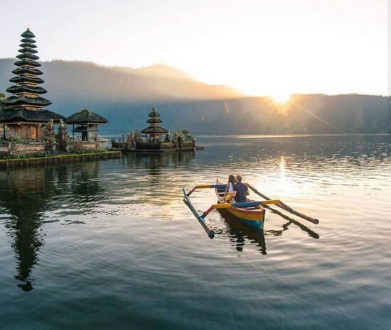

1. Tanah Lot
Wisata yang satu ini terkenal dengan keindahan pemandangannya, terutama menjelang matahari terbenam.
Keunikan utama yang ada di wisata tanah lot ini adalah adanya pura yang berada di sebuah batu karang besar yang ada di pinggiran laut.
Saat laut sedang pasang, maka anda tidak dapat mendekati pura karena kawasan di sekitar batu karang akan digenangi dengan air laut.
Saat air surut, anda dapat melihat beberapa ular laut yang jinak. Konon warga setempat meyakini jika ular-ular ini merupakan penjaga pura Tanah Lot.
Selain itu, di kawasan Tanah Lot anda juga bisa mencoba memegang ular suci yang sama sekali tidak berbahaya.

2. Danau Beratan
Danau Bratan merupakan wisata danau yang berada di kawasan Bedugul, Desa Candikuning, Kec. Baturiti, Tabanan, Bali.
Karena berada di ketinggian 1.240 mdpl, tak heran jika suhu udara yang ada di sekitar danau sangat sejuk dan segar.
Danau terluas kedua di bali ini memiliki fungsi utama sebagai sumber irigasi di daerah-daerah yang terletak di bagian tengah Bali.
Meskipun begitu, pemandangan alam yang ada di sekitar danau sangat menakjubkan yang membuatnya menjadi 20 danau terbaik dan terindah yang ada di dunia.
Salah satu daya tarik yang ada di Danau ini adalah adanya Pura Ulun Danau Berayan yang ada di bagian ujung Danau.
Keeoksotisan danau dengan adanya Pura Ulun ini menjadi pesona tersendiri yang tak boleh terlewatkan.

3. Garuda Wisnu Kencana
GWK merupakan salah satu taman wisata budaya yang berada di Bali Selatan. Wisata ini memang cukup populer, terlebih saat ini pembangunan patung raksasai Garuda Wisnu Kencana sudah berhasil diselesaikan.
Anda bisa menikmati kemegahan patung karya I Nyoman Nuarta yang juga ditemani dengan keindahan bukit-bukit kapur di sekitarnya.
Dan tak hanya itu saja, di GWK terdapat teater seni yang dimana anda bisa melihat berbagai jenis kesenian dan tarian bali setiap harinya.
4. Pantai Uluwatu
Pantai Uluwatu menjadi wisata selanjutnya yang wajib anda kunjungi saat berada di Pulau Bali.
Meskipun lokasi pantai ini cukup tersembunyi, namun keindahan alam yang ada di dalamnya bak surge yang tersembunyi.
Pantai yang dikenal dengan nama lain Blue Point ini mengharuskan pengunjung untuk menuruni beberapa anak tangga yang sempit untuk bisa sampai ke Pantai Uluwatu.
Meskipun begitu, pemandangan laut yang ditawarkannya sama sekali tidak akan membuat anda kecewa.
Uniknya, kebanyakan orang yang datang berkunjung ke Pantai Uluwatu merupakan wisatawan-wisatawan asing.
Sangat jaran ditemukan wisatawan lokal yang bermain di Pantai ini.
Kebanyakan wisatawan datang ke Pantai Uluwatu untuk sekedar berjemur atau berselancar.

5. Monkey Forest Ubud
Salah satu daya tarik yang ada di Monkey Forest Ubud adalah disini anda bisa langsung berinteraksi dengan kera ekor panjang yang memang menghuni kawasan wisata ini.
Di kawasan ini, kera-kera memang hidup bebas. Warga setempat menganggap jika kera-kera tersebut adalah keramat yang tidak boleh diganggu.
Sehingga anda benar-benar bisa merasakan suasana seperti menyatu dengan alam.
Ditambah lagi dengan suasana alamnya yang sangat sejuk tentu akan sangat cocok bagi anda yang mencari tempat terbaik untuk refreshing sejenak.
Namun karena banyaknya kera-kera yang menghuni tempat ini, jangan membawa barang-barang yang terlihat mencolok. Hal ini karena dapat mengundang kejahilan para kera yang tiba-tiba dapat mengambil barang-barang bawaan anda.

6. Nusa Peninda
Mencari surga tersembunyi di Bali? kunjungi saja Nusa Penida. Pulau kecil ini menyimpan banyak keindahan alam yang masih relatif belum banyak terjamah.
Tidak seperti di Bali, keindahan pantai disini masih bersih, jauh dari hingar bingar pendatang.

7. Pantai Pandawa
Pantai Pandawa yang berpasir putih ini cukup populer akhir-akhir ini karena menawarkan pemandangan yang begitu eksotis dan mempesona.
Berada di Desa Kutuh, Kec. Kuta Selatan, Kab. Badung,pantai ini memiliki hamparan garis pantainya yang landai, bersih, serta bibir pantai yang agak luas, sehingga sangat cocok untuk dijadikan wisata bersama keluarga.
Ada banyak aktivitas yang bisa anda coba di tempat ini mulai dari berenang, bermain kano, mengunjungi 5 patung ksatria Pandawa, berselancar, merilekskan diri sejenak dengan pijat tradisional, dan masih banyak lainnya

8. Danau Batur
Danau eksotis ini berada di kawasan Kintamani, Bali.
Nama “batur” ini merujuk pada nama sebuah Gunung yang letaknya tidak jauh dari danau ini yaitu Gunung Batur.
Danau Batur berada tepat di lereng Gunung Batur, di ketinggian 1.050 mdpl sehingga udara di sekitar danau ini akan terasa sangat sejuk.
Air danau yang berwarna biru kehijauan yan tenang membuat siapapun yang berkunjung ke danau ini akan merasa damai.
Ditambah lagi dengan pesona alamnya yang sangat mempesona, membuat wisatawan merasa betah untuk berlama-lama di kawasan Danau Batur ini.
Tak hanya dapat menikmati keindahan Danau Batur, pengunjung juga dapat berlayar ke tengah danau maupun mencoba memancing di sekitaran danau.
Dan jika anda ingin melihat keseluruhan dari pemandangan yang ada di Danau Batur Kintamani, anda bisa langsung ke desa Penelokan.
Disini anda bisa melihat pemandangan Danau Batur dari atas ketinggian yang sangat elok dengan latar belakang Gunung Batur.

9. Gunung Batur
Salah satu lokasi terbaik di Bali untuk menyaksikan pemandangan matahari terbit adalah di puncak Gunung Batur.
Untuk mencapai puncak Gunung Batur, biasanya dibutuhkan waktu sekitar 2,5 jam.
Sambil trekking, anda bisa melihat pemandangan yang indah di sekitar kawasan Gunung Batur.

10.Desa Penglipuran
Jika anda sering melihat sinetron-sinetron di salah satu stasiun televisi, mungkin anda sudah tidak asing lagi dengan tampakan Desa Penglipuran.
Desa adat di Bali ini menjadi salah satu destinasi wisata yang tidak boleh terlewatkan saat berlibur di Pulau Bali.
Berada di desa Kubu, Kab. Bangli, desa penglipuran ini bertempat di ketinggian 700 mdpl.
Sehingga bisa dibayangkan sendiri bagaiaman sejuknya udara saat anda masuk ke kawasan Desan penglipuran.
Di desa Pengliperan, anda masih bisa melihat suasana adat Bali yang begitu kental.
Anda bisa melihat tampakan rumah-rumah penduduk yang bentuknya hampir sama.
Bahkan kemiripannya tersebut dapat dilihat pada bagian atap, dinding, hingga pintu rumah.
Keunikan dari Desa penglipuran bisa menjadi wisata menarik yang dapat anda kunjungi saat liburan.